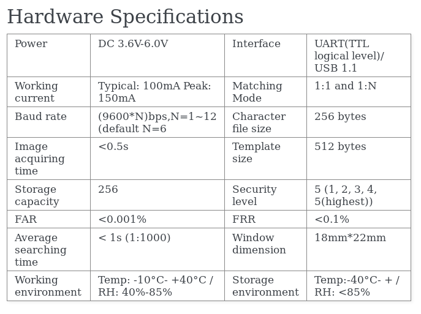

class: center, middle, inverse # PySerial Package and Interfacing R305 using Python. --- class: inverse # Agenda * Introduction to Serial Interface/UART/TTY * PySerial basics * R305 * R305 working * python-R305 package --- class: inverse # Introduction to Serial Interface/UART/TTY * Interface through which data is transfered in or out one bit at a time. * Used to connect the devices like modems, terminals etc. * Serial Port is used as synonym for RS232. * Baudrate: Bits per second. (1200, 1800, 2400, 4800, 9600, 19200, 38400, 57600, 115200.) * Pins: RX, TX, GND, VCC (for USB to TTL convertor). * /dev/tty* <img src="https://upload.wikimedia.org/wikipedia/commons/thumb/2/24/UART_timing_diagram.svg/800px-UART_timing_diagram.svg.png"></img> --- class: inverse # PySerial basics ## Installation ```bash $ pip install pyserial ``` ## Usage ```python import serial ser = serial.Serial('/dev/ttyUSB0', 9600) # open serial port print(ser.name) # check which port was really used ser.write('hello') # write a string print(ser.read(ser.in_waiting)) # read the incoming string ser.close() # close port ``` --- class: inverse # R305 <img src="http://girishjoshi.io/images/R305.jpg" width=500 height=500 align="center"></img> --- class: inverse # R305 Pinouts <img src="http://girishjoshi.io/images/R305-pins.jpg"> --- class: inverse # R305 R305 is a low cose fingerprint identification module. It can store upto 256 fingerprints in it. which makes it a grate option for academic projects. This module is operated on UART thus can be used with microcontrolers, Raspberry Pi and also with any other computer (using USB to UART convertor). --- class: inverse # R305 </img> --- class: inverse # R305 ## Data Packet </img> --- class: inverse #R305 Working Fingerprint processing includes two parts: fingerprint enrollment and fingerprint matching (the matching can be 1:1 or 1:N). When enrolling, user needs to enter the finger two times. The system will process the two time finger images, generate a template of the finger based on processing results and store the template. When matching, user enters the finger through optical sensor and system will generate a template of the finger and compare it with templates of the finger library. Source:http://fingerprint-module-r305-python-and-mysql.readthedocs.io/en/latest/index.html --- class: inverse # Python-R305 Package ## Installation ```bash $ pip install R305 ``` Github Repo https://github.com/girish946/python-R305 Documentation http://python-r305-doc.readthedocs.io/en/latest/index.html --- class: inverse # Python-R305 Package ## Storing fingerprint. ```python #!/usr/bin/env python # -*- coding: utf-8 -*- from r305 import R305 import sys device = sys.argv[1] baudrate = sys.argv[2] # the default baudrate for this module is 57600 dev = R305(device, baudrate) def callback(data): x = raw_input(data) result = dev.StoreFingerPrint(IgnoreChecksum=True, callback=callback) print(result) ``` --- class: inverse # Python-R305 Package ## Searching Fingerprint ```python #!/usr/bin/env python # -*- coding: utf-8 -*- from r305 import R305 import sys device = sys.argv[1] baudrate = sys.argv[2] # the default baudrate for this module is 57600 dev = R305(device, baudrate) result = dev.SearchFingerPrint() print(result) ``` --- class: inverse # Instructions Implemented http://python-r305-doc.readthedocs.io/en/latest/Python-R305.html --- class: inverse # Refrences * [DataSheet](http://www.rhydolabz.com/documents/finger-print-module.pdf) * [Fingerprint DataBase Example](http://fingerprint-module-r305-python-and-mysql.readthedocs.io/en/latest/index.html) --- class: center, middle, inverse # Thank You <a href="https://twitter.com/girish946">@girish946</a> http://girishjoshi.io